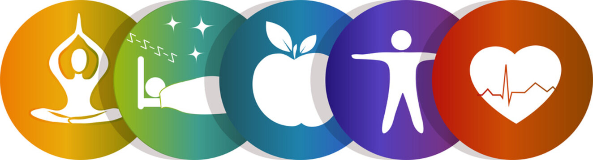

Health can be promoted by encouraging healthful activities, such as regular physical exercise and adequate sleep,[1] and by reducing or avoiding unhealthful activities or situations, such as smoking or excessive stress. Some factors affecting health are due to individual choices, such as whether to engage in a high-risk behavior, while others are due to structural causes, such as whether the society is arranged in a way that makes it easier or harder for people to get necessary healthcare services. Still, other factors are beyond both individual and group choices, such as genetic disorders.
| services | weight | days |
|---|---|---|
| cardio | 50-55 | 30days |
| pilates | 55-60 | 45days |
| yoga | 60-80 | 60days |
| diet | 80-100above | 100days |

A number of health issues are common around the globe. Disease is one of the most common. According to GlobalIssues.org, approximately 36 million people die each year from non-communicable (i.e., not contagious) diseases, including cardiovascular disease, cancer, diabetes and chronic lung disease.[28] Among communicable diseases, both viral and bacterial, AIDS/HIV, tuberculosis, and malaria are the most common, causing millions of deaths every year.[28] Another health issue that causes death or contributes to other health problems is malnutrition, especially among children. One of the groups malnutrition affects most is young children. Approximately 7.5 million children under the age of 5 die from malnutrition, usually brought on by not having the money to find or make food.[28] Bodily injuries are also a common health issue worldwide. These injuries, including bone fractures and burns, can reduce a person's quality of life or can cause fatalities including infections that resulted from the injury (or the severity injury in general).[28] Lifestyle choices are contributing factors to poor health in many cases. These include smoking cigarettes, and can also include a poor diet, whether it is overeating or an overly constrictive diet. Inactivity can also contribute to health issues and also a lack of sleep, excessive alcohol consumption, and neglect of oral hygiene.[citation needed] There are also genetic disorders that are inherited by the person and can vary in how much they affect the person (and when they surface)
Public health is "the science and art of preventing disease, prolonging life and promoting health through the organized efforts and informed choices of society, organizations, public and private, communities and individuals".[1][2] Analyzing thedeterminants of health of a population and the threats it faces is the basis for public health.[3] The public can be as small as a handful of people or as large as a village or an entire city; in the case of a pandemic it may encompass several continents. The concept of health takes into account physical, psychological, and social well-being, among other factors
click here